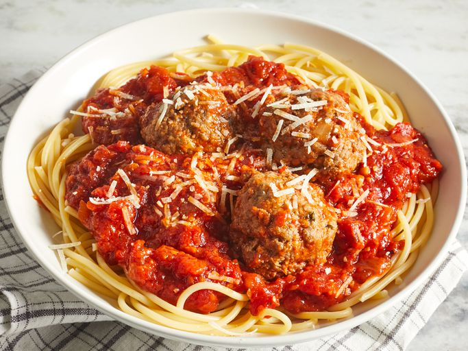

Italian Spaghetti Sauce with Meatballs

Description
This is an Italian-style pasta sauce with homemade meatballs that’s cooked slowly over low heat for an intense tomato flavor. It’s easy to make the spaghetti sauce ahead of time; gently reheat and add meatballs 30 minutes before you’re ready to serve with your favorite pasta.
Ingredients
Meatballs:
- 1 pound lean ground beef
- 1 cup fresh bread crumbs
- 1 tablespoon dried parsleys
- 1 tablespoon grated Parmesan cheese
- ¼ teaspoon ground black pepper
- ⅛ teaspoon garlic powder
- 1 egg, beaten
Sauce:
- ¾ cup chopped onion
- 5 cloves garlic, minced
- ¼ cup olive oil
- 2 (28 ounce) cans whole peeled tomatoes
- 2 teaspoons salt
- 1 teaspoon white sugar
- 1 bay leaf
- 1 (6 ounce) can tomato paste
- ¾ teaspoon dried basil
- ½ teaspoon ground black pepper
Home